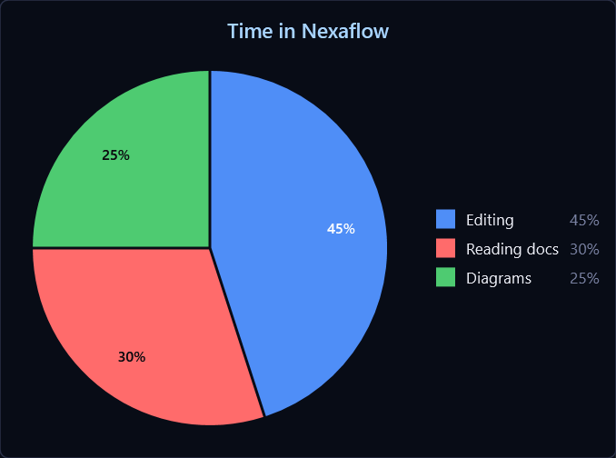
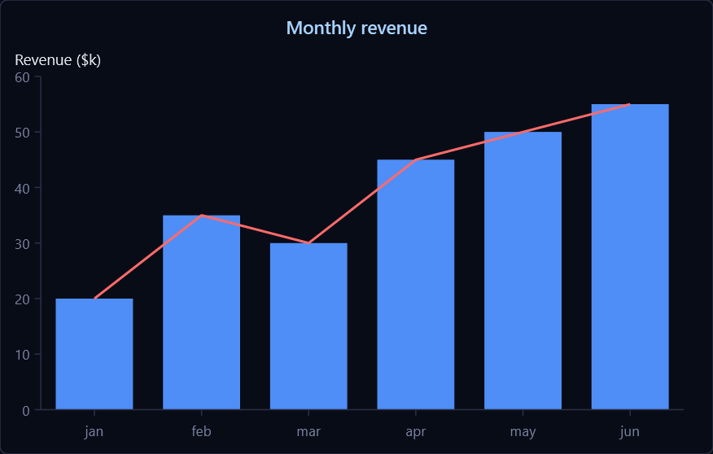
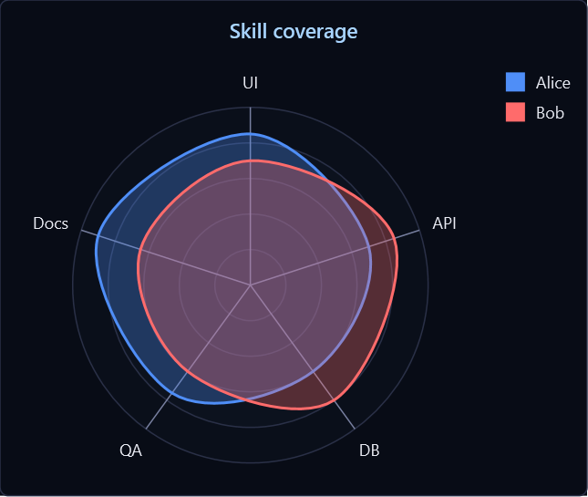
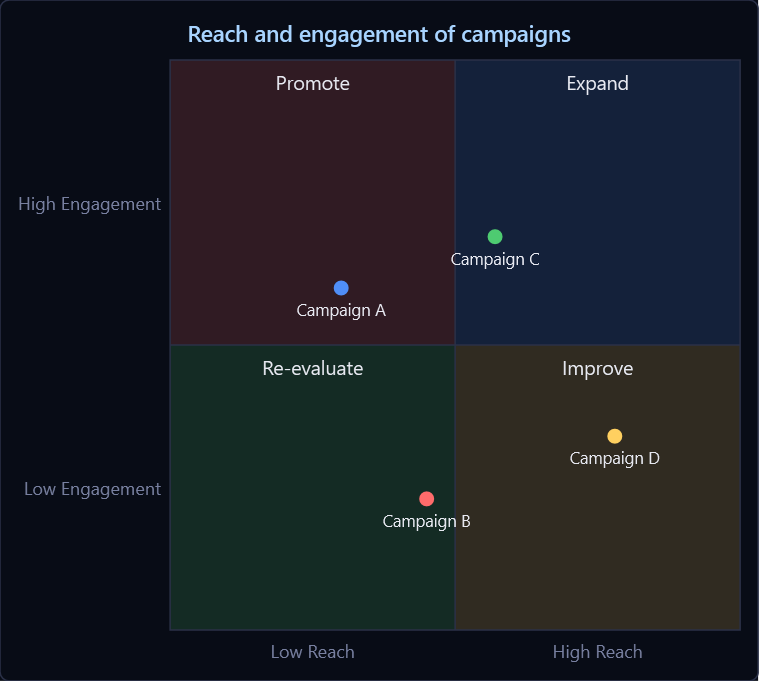
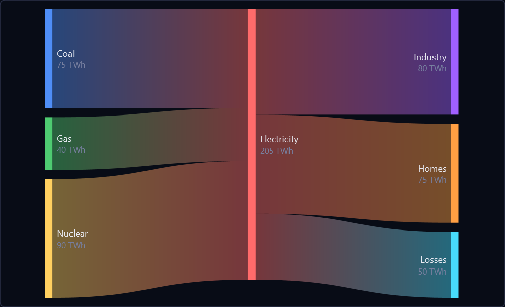
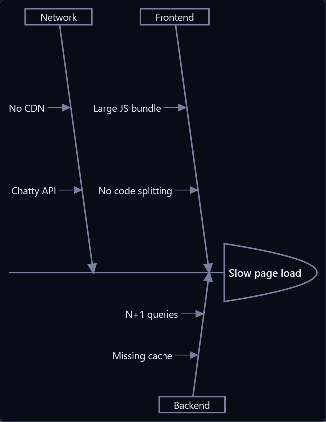
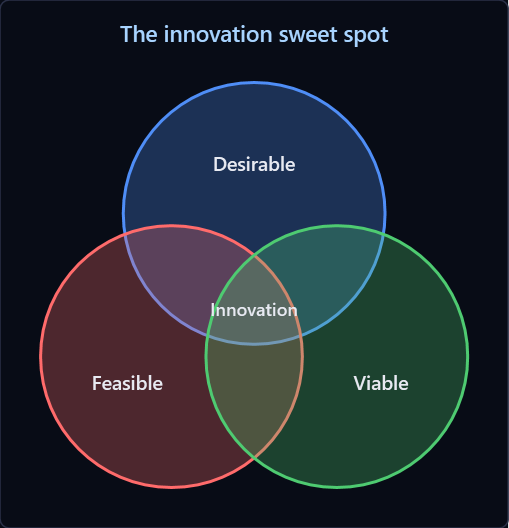
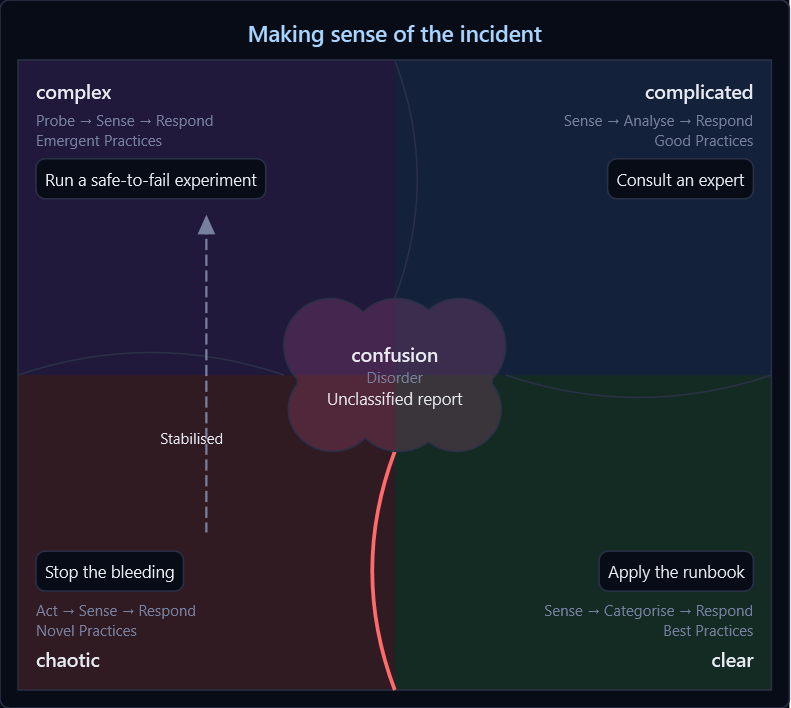

Pie chart
Proportional slices with a title.
```mermaid
pie title Time in Nexaflow
"Editing" : 45
"Reading docs" : 30
"Diagrams" : 25
```

XY chart
Bar and line series over a shared axis — combine them, name them for a legend, and weight the colours with config.
```mermaid
xychart-beta
title "Monthly revenue"
x-axis [jan, feb, mar, apr, may, jun]
y-axis "Revenue ($k)" 0 --> 60
bar [20, 35, 30, 45, 50, 55]
line [20, 35, 30, 45, 50, 55]
```

Radar chart
Multi-axis comparison (a.k.a. spider chart), with one closed curve per series.
```mermaid
---
title: "Skill coverage"
---
radar-beta
axis ui["UI"], api["API"], db["DB"], qa["QA"], docs["Docs"]
curve alice["Alice"]{85, 70, 60, 75, 90}
curve bob["Bob"]{70, 85, 80, 60, 65}
max 100
```

Quadrant chart
Plot items against two axes, captioned by quadrant.
```mermaid
quadrantChart
title Reach and engagement of campaigns
x-axis Low Reach --> High Reach
y-axis Low Engagement --> High Engagement
quadrant-1 Expand
quadrant-2 Promote
quadrant-3 Re-evaluate
quadrant-4 Improve
Campaign A: [0.3, 0.6]
Campaign B: [0.45, 0.23]
Campaign C: [0.57, 0.69]
Campaign D: [0.78, 0.34]
```

Sankey diagram
Flows whose ribbon widths are proportional to value, with optional value labels and units.
```mermaid
---
config:
sankey:
showValues: true
suffix: " TWh"
---
sankey
Coal,Electricity,75
Gas,Electricity,40
Nuclear,Electricity,90
Electricity,Industry,80
Electricity,Homes,75
Electricity,Losses,50
```

Ishikawa (fishbone) diagram
Cause-and-effect / root-cause analysis: an effect on the spine, with categories and nested causes branching off it.
```mermaid
ishikawa-beta
Slow page load
Frontend
Large JS bundle
No code splitting
Backend
N+1 queries
Missing cache
Network
No CDN
Chatty API
```

Venn diagram
Overlapping sets, sized by weight, with labelled intersections.
```mermaid
venn-beta
title "The innovation sweet spot"
set Desirable
set Feasible
set Viable
union Desirable,Feasible,Viable["Innovation"]
```

Cynefin diagram
Sense-making: what is in hand sorted into the five domains — complex, complicated, chaotic and clear in the corners, confusion as disorder in the middle — with the movements between them.
```mermaid
cynefin-beta
title Making sense of the incident
complex
"Run a safe-to-fail experiment"
complicated
"Consult an expert"
clear
"Apply the runbook"
chaotic
"Stop the bleeding"
confusion
"Unclassified report"
chaotic --> complex : "Stabilised"
```
